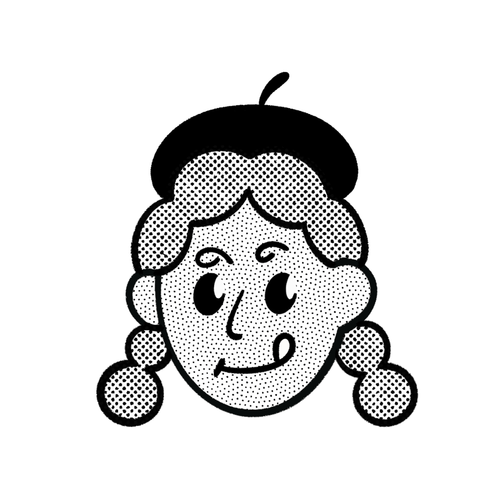

Researcher
Woo Jinsun
About Me

MBTI
ESTJ
내일의 성장을 위해 오늘을 꼼꼼하게 설계하는 프로 계획러.
호기심이 생기면 망설임 없이 부딪혀보는 불도저 성향입니다.
Keywords
Interests
데이터 분석
숫자 이면의 패턴을 읽어 직관을 확신으로 바꿉니다.
다이어트 (자기 관리)
운동과 식단으로 단단한 기초 체력을 기릅니다.
기록과 힐링
길고양이 사진을 찍으며 힐링합니다. (나만 없네)
Hobbies
수영
물속에 집중하며 번잡한 스트레스를 씻어냅니다.
러닝 · 마라톤
꾸준한 페이스 조절로 내면의 끈기를 단련합니다.
음악 듣기
신나는 음악으로 스트레스를 해소합니다.
Vision
2026 Vision: New Leap
Goal: 데이터 기반 기획자로의 성공적인 이직
Action: 패스트캠퍼스 데이터 분석 마스터
Commitment: 어제의 학습을 내일의 성과로 증명하는 해